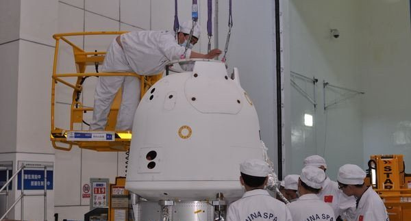

2014-11-01 00:41:00
中共在2003年決定在“空間站”（即台灣所稱的“太空站”）計劃之外，另外開啟無人探月工程，又稱嫦娥工程，預定在20年内完成，並可視情况轉入載人登月工程。在細節上，整個探月計劃分為三個階段，即“繞”、“落”、“回”，共有七次發射任務。去年十二月運載玉兔號月球車降落月球表面的嫦娥三號，是第三次發射，也是“落”階段的第一步。在2014年十月24日，“回”階段正式開始，在第四次任務中發射了嫦娥5號T1（T代表探路，真正的嫦娥5號將在2017年升空）飛向月球，在繞月半周後，直接返回地球；這是因為嫦娥5號T1的任務是測試重返大氣層的過程，所以不須要在月球逗留。當然重返大氣層對太空任務來說是家常便飯，可是絶大多數的情況是從LEO（Low Earth Orbit，低繞地軌道）回來，飛行速度是所謂的第一宇宙速度（First Cosmic Velocity），約每秒7.8公里。而從月球回來的太空船則具有第二宇宙速度（Second Cosmic Velocity），即每秒10.9公里；因此有大約两倍的動能。如果直接使用一般的大氣層剎車，則空氣摩擦所產生的熱量亦將為從LEO重返大氣層的两倍，這就要求大幅增加隔熱層的厚度和抗熱能力，不但危険而且增加死重，在同様的任務酬載條件下，必須改用更大更昂貴的火箭，所以能避免就應該避免。

出發前的嫦娥5號T1返回艙，它是一個嫦娥5號返回艙的模型。
剛著陸的嫦娥5號T1返回艙。中共的太空飛行計劃始自空氣動力學大師銭學森，以致其飛行精度一向不在美蘇之下。内蒙的降落場要比俄國用的中亜草原和美國用的太平洋降落區小多了。
對這個問題，最好的解決方案是分两次剎車，也就是第一次進入大氣層時，角度瞄得淺些，在消耗了一部分動能之後，重新彈回太空，進入一個橢圓的低繞地軌道，在繞地球半周之後，再以平常的第一宇宙速度重返大氣層。當然氣動力學是完全非線性的現象學，大氣層剎車之後馬上要在自身動力非常有限的條件下，以特定速度和角度進入一個新的軌道，這說來容易，做來就難得多了。這是中共第一次嘗試大氣層剎車减速後重入軌道，所以特别用一次發射任務專門來檢驗這項技術。結果是圓滿成功，嫦娥5號T1的返回載具於十一月1日早晨按計劃在南大西洋上空首次進入大氣層，四分鍾之後重入太空，繞地球半周之後，順利降落在内蒙，
1960年代的阿波羅計劃原本也考慮過两次剎車的方案，後來因為没有把握達到所需的精度，選用了直接一次進入大氣層的方法；當然NASA為此研發了3000噸級的土星五號火箭，而蘇聯在試圖自製同級的N1火箭過程中，因連續數次爆炸，從登月競賽中敗下陣來。中共目前最大的火箭是400噸級的長征三型，預計在2017年用來發射嫦娥5號的長征五型也只有800噸，4000噸級的長征九型要到2030年才能服役。所以從這個觀點來看，中共在火箭引擎技術上落後美國不只50年。不過阿波羅計劃是美國的巔峰之作，從那裡開始美國工業實力一路走下坡，到現在連複製土星五號火箭的引擎都已經無能為力，目前在研的SLS（Space Launch System）重型火箭只有1000噸重，最早要到2021年才能服役；而2014年十月28日在發射台自毁爆炸的Antares火箭用的居然是翻修後的舊蘇聯N1火箭用的引擎。最有創意的Spaceship Two也只是個不能完全飛出大氣層的玩具，結果原型機在十月31日也墜毁了。讀《羅馬帝國衰亡史》（《The Decline and Fall of the Roman Empire》）的感覺和生活在今日的美國其實是很像的。四世紀的羅馬軍團頭盔和鎧甲還是一世紀羅馬全盛時期的設計，但是製程大幅簡化，做工粗糙，歷史學家一看就知道；未來的歷史學家大概對二十一世紀的美國也會有類似的評語。